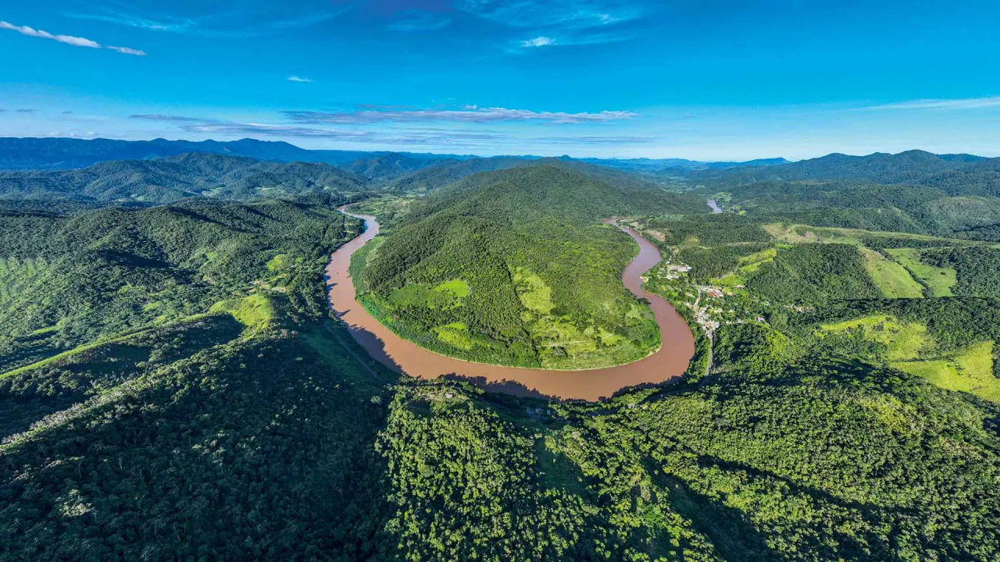

Novo estudo de fôlego mostra a Mata Atlântica
na UTI
82% das espécies endêmicas do bioma estão ameaçadas de extinção e podem desaparecer sem políticas
efetivas contra o desmatamento



A história de como o pau-brasil despertou o interesse dos portugueses
que aqui desembarcaram pela primeira vez, há mais de 500 anos, é
conhecida. Com sua cor avermelhada, o tronco tinha enorme valor
como matéria prima de corantes, e sua exploração se mostrou
extremamente lucrativa. Caravelas saíam da antiga colônia tropical
carregadas. Com o tempo e o desmatamento avassalador, a espécie
chegou a ser considerada extinta na virada do século XX. O pau-brasil,
lembre-se, é apenas uma das mais de 5 000 espécies da Mata Atlântica,
que de tão devastada ao longo da história conserva hoje apenas 20% da
cobertura original. Um estudo recente da revista Science, referência na
comunidade científica mundial, aponta para cenário ainda mais
preocupante - ainda que seja o único bioma brasileiro contemplado
com leis específicas sobre o uso de território. O controle fracassou.
De acordo com o levantamento, 82% das mais de 2 000 espécies de
árvores endêmicas da mata estão ameaçadas de extinção.
“Esperávamos encontrar algo em torno de 60%”, diz o coordenador da
pesquisa, o brasileiro Renato Lima, professor do Departamento de
Ciências Biológicas da Escola Superior de Agricultura Luiz de Queiroz
(Esalq). Das 5 000 espécies presentes na região, incluindo aquelas que
também aparecem em outros cantos, 65% enfrentam algum tipo de
risco. Trata-se de um estudo de fôlego, o maior já realizado, e parte de
uma avaliação completa das populações arbóreas da Mata Atlântica.
Lima e sua equipe conseguiram reunir dados da região que estavam
dispersos, incluindo 3 milhões de registros de herbários e de
inventários florestais, além de informação detalhadas sobre a
biologia, a ecologia e os usos das espécies de árvores, palmeiras e
samambaiaçus, fósseis vivos das florestas primitivas. Além disso,
inovam ao usar na classificação três critérios - e não apenas um, o
geográfico -, da União Internacional para a Conservação da Natureza
(IUCN), autoridade mundial de espécies ameaçadas.
Além da situação crítica de espécies já conhecidas, como o pau-brasil,
citado como em “risco crítico de extinção” por conta da redução de
mais de 80% de sua população, árvores como a araucária, o palmito-
juçara e a eva-mate, entre muitas outras, também correm perigo.
Segundo os dados levantados, apenas 7% das espécies endêmicas
apresentaram um declínio populacional inferior a 30% nas últimas tres
gerações - qualquer índice acima disso impõe alerta. "O estudo mostra
quais são e onde estão as espécies mais ameaçadas", diz Eduardo
Fernandez, coodernador de projetos do Núcleo de Avaliação do Estado
de Conservação da Flora, localizado no Jardim Botânico, no Rio de
Janeiro, um dos parceiros de Lima no levantamento. A partir das
informações, será lançada uma edição atualizada da Lista Vermelha,
que mostra o real estado de conservação das espécies brasileiras.
A divulgação do resultado surpreendeu os especialistas em estudos de
conservação do bioma. "A Mata Atlântica está na UTI", diz Luis
Fernando Guedes Pinto, diretor-executivo da Fundação SOS Mata
Atlântica. "Se continuar nesse ritmo, vai acabar". Pode haver algum
alarmismo, mas convém ressaltar que o estudo não leva em conta o
aquecimento global. A emergência climática transforma a Mata
Atlântica em um "hotspot da biodiversidade", como são chamadas as
regiões ricas em espécies endêmicas e ameaçadas. Até 2025, o Brasil se
comprometeu a reduzir as emissões de gases de efeito estufa em 37%,
mas ainda há muito o que fazer. Hoje, a maioria das políticas públicas
está centrada na Amazônia. "A Mata Atlântica continua a sofrer grande
pressão da agropecuária, principal vetor da perda de vegetação nativa",
diz Pinto. Sem uma política de desmatamento zero, o futuro é incerto.
Mais lidas
candidato'